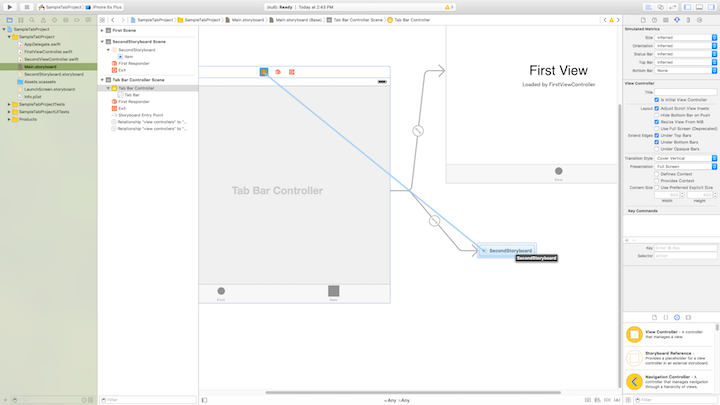
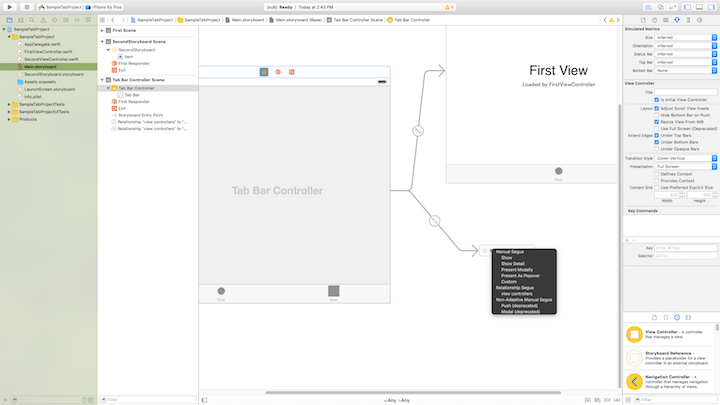
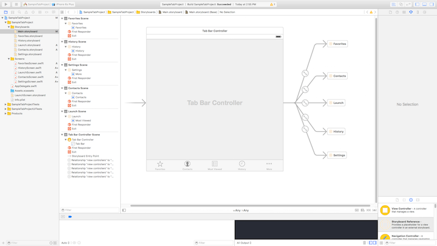
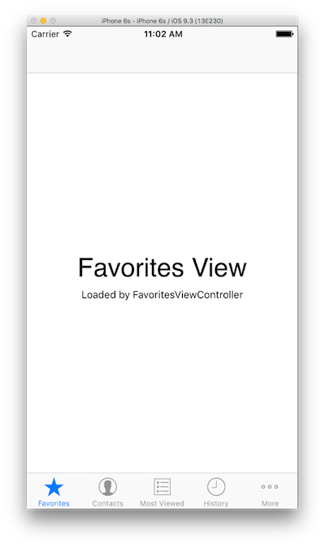
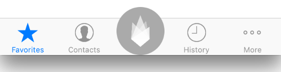

< Return to all blogs
Swift Navigation Basics: How to Setup a Tab Bar App
A tutorial on how to build a simple app that uses the iOS native navigation bar. It includes extensions and best practices in addition to all the bare bones requirements.
The Basics
Setting up the Project
- Choose the Tab Bar template when prompted to create a new Xcode project
- Obviously it’s very easy to do this completely from scratch, but why go to the trouble if Xcode does it for you.
- Selecting this will set you up with a single storyboard file and two view controllers.
- Within the main.storyboard, you will find a “Tab Bar Controller” with two tabs already created.
- For learning purposes, delete the two view controllers so that you simply have a tab bar controller left.
The “Main” Storyboard
Even if you decide to diffract your storyboards into multiple files, you must always have a storyboard named “main.storyboard.” Xcode automatically looks for this file when it loads so it is imperitive that it can find it, otherwise your app won’t compile and/or could crash. Within that file you must have an initial view of some sort — this will be the first view that’s loaded in your project.
Diffracting Into Multiple Storyboard Files
- Create storyboard in new file (new -> iOS -> User Interface -> Storyboard)
- If you anticipate not using the navigation controller functionality, you can skip steps 3 and 4. Instead, drag a view controller onto the canvas and drag the “Tab Bar Item” onto the view.
- Drag a navigation controller onto the canvas and delete the Root Navigation Controller that it comes with. This tab bar navigation controller acts as a sort of placeholder for the tab bar controller in our main.storyboard file. Set this controller as the initial view controller.
- Now drag a view controller onto the canvas and connect it to the navigation controller using the ctrl/click drag feature. Drag from the navigation controller onto the view controller and select the “Root View Controller” relationship.
- Drag a reference object onto the main.storyboard and in the right sidebar, make sure to connect it to the correct storyboard file. A reference is like a collection of views and can be treated as such. It does not necessarily need to be connected to a tab bar controller and can be segued to like you would any view controller.
- Basically what a reference is doing is segueing to a completely different storyboard file. The reason why you need an initial view controller on each “.storyboard” file is because when you segue to the file, you need to know which view controller within the file to start on.
Connect the Tabs to the Storyboard
- Navigate back to your second storyboard file and ctrl-click drag from the Tab bar controller view to the reference and choose: Relationship Segue: view controllers. This will connect the storyboard reference to the toolbar in the tab bar controller.


- You will see a new item appear on the tab bar controller nav bar at the bottom of the view. The nav bar items here are somewhat irrelevant. Because we are using multiple view controllers, we must set the tab bar items using the navigation controller we created in the referenced storyboard file.
- To set the image icon, label, etc., go to the storyboard file for that specific section of the app. If you used a navigation controller follow these nested steps. If you used a simple view controller, skip to the next step.
- Find the root view controller that we connected to the navigation controller and select the tab bar item element that’s found just below “View.”
- Drag this element into the “Navigation Controller Scene” under the group “Navigation Controller” so that it’s nested next to “Navigation Bar.” Now the icon will appear on all screens in this storyboard file.
- Select the “Tab Bar Item” that you dragged into the view controller.
- Use the options toolbar on the right to set the badge number, title, image, tag, and label position. You can also choose from default, iOS items like “Favorites,” “Contacts,” and “History.”

- Your final main.storyboard should look like this:

Connect the Storyboard Controller to the Swift View Controllers
- Create a new Swift file for each of the UIViewController’s you’ve created, excluding the Tab Bar Controller. The reliable, minimum amount of code in this file is something like this:
class FavoritesViewController: UIViewController { // Name of view controller override func viewDidLoad() { super.viewDidLoad() // Do any additional setup after loading the view, typically from a nib. } override func didReceiveMemoryWarning() { super.didReceiveMemoryWarning() // Dispose of any resources that can be recreated. } } - Use the options sidebar on the right to connect the UIViewController to a custom class. Select the name that you chose when creating the UIViewController class in your Swift file.
- Now, you should be set. You should have a set number of sections within your app. Each section has a “.storyboard” file, a single view controller within that storyboard marked as the initial view controller, a Swift UIViewController file connected to the storyboard view controller, and an icon in the toolbar. This is a bare bones example of an app with tab bar style navigation and defracted view controllers. My final product looked like this:

Below are some additional customizations you can choose to add to your tab bar.
Setting a Custom Icon
- When setting a custom icon, you basically have two images: one for an unselected state and one for the selected state. The selected state is generally filled whereas the unselected state is an outline.
- Using Sketch or a similar graphic design tool, create the PNG files with these sizes for both icons:
- image.png (1x version) is 30px x 30px
- image@2x.png (2x version) is 60px x 60px
- Some good guidelines:
- Removed all white from the image so that it was just a black image with a transparent background.
- Stay away from fills and use a 1 or 2px outline
- One for when you’re selected and one for when you’re not
- Allows you to have custom colors in the toolbar
- Import these images into Assets.xcassets. If you don’t want your icon color to change make sure you set “Render As” to “Original Image” located in the sidebar. Otherwise, it’ll use the default blue.
- Navigate to the tab item in your main.storyboard that you wish to add your custom image for. In the right sidebar, under options, there is a section called “Bar Item.” In this section, set the title (ie. the label) of your tab and select your image.
Large Center Icon in Tab Bar
A lot of apps have a toolbar with a large center button that appears over the rest of the toolbar. It’s often a different shape and emphasizes the importance of that center tab. I recently figured out how to do this. Essentially you are creating a custom class for the tab bar and overlaying a button on top of the middle tab item. It creates a UIButton that blocks and replaces the functionality of the normal middle item.

Here is the class:
class CustomTabBarController: UITabBarController {
// Remember to the Tab Bar Controller custom class on your storyboard
override func viewDidLoad() { // Called when tab bar loads
super.viewDidLoad()
self.setupMiddleButton() // Sets up button
}
func setupMiddleButton() {
let menuButton = UIButton(frame: CGRect(x: 0, y: 0, width: 64, height: 64))
var menuButtonFrame = menuButton.frame
menuButtonFrame.origin.y = self.view.bounds.height - menuButtonFrame.height
menuButtonFrame.origin.x = self.view.bounds.width/2 - menuButtonFrame.size.width/2
menuButton.frame = menuButtonFrame
menuButton.backgroundColor = UIColor.whiteColor()
menuButton.layer.cornerRadius = menuButtonFrame.height/2
menuButton.setImage(UIImage(named: "white-geo-flame"), forState: UIControlState.Normal) // 450 x 450px
menuButton.contentMode = .ScaleAspectFit
menuButton.addTarget(self, action: #selector(CustomTabController.menuButtonAction(_:)), forControlEvents: UIControlEvents.TouchUpInside)
self.view.addSubview(menuButton)
self.view.layoutIfNeeded()
}
func menuButtonAction(sender: UIButton) {
self.selectedIndex = 2
}
}Conclusion
A more decorated example of all of this can be found at: https://github.com/khou22/Swift-App-Templates/tree/master/SampleTabProject. A bare bones tab navigation app template can be found at https://github.com/khou22/Swift-App-Templates/tree/master/TabBarTemplate.
Posted in Programming with iOS, Swift, Apps, Xcode